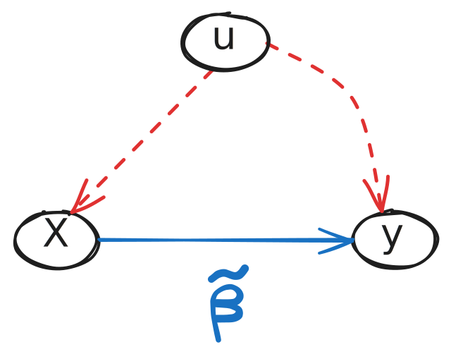

Causal Inference for Educational Stratification Research
A minimal tour
December 4, 2024
Why should we care about causal inference?
The social sciences are experimenting what some authors have called a “credibility revolution” (Angrist and Pischke, 2010), an “identification revolution” (Morgan, 2016), or simply a “causal revolution” (Pearl and MacKenzie, 2018)
In artificial intelligence/ML, causality have been deemed “the next frontier” and “the next most important thing”
The enormous progress in the last decades has been facilitated by the development of mathematical frameworks that provide researchers with a precise language to handle causal questions: Potential Outcomes and the Structural Causal Model
But, really, why should I care?

What is your estimand?
Researchers, at least social scientists, tend to formalize their effect of interest as regression coefficients (i.e., their hypothesis are formulated within a statistical model)
Potential outcomes offer a way to formalize what we mean by a causal effect outside any statistical model. Graphical models provides a way to formalize our assumptions without parametric restrictions.
This allows us to clearly separate what do we want (a certain estimand), what needs to be true so we get what we want (identifying assumptions), the statistical machinery to transform data into an answer for our question (an estimator), and the particular answer we get (our empirical estimate).
Lundberg, Johnson, and Stewart (2021) discuss this point in great detail. Absolutely worth reading! Ungated version here.
What is your estimand?
The ladder of causality
| Estimand | Activity | Field/Discipline | Questions | Example |
|---|---|---|---|---|
| \(\mathbf{P(Y \vert X)}\) | Seeing, Observing | Stats, Machine Learning | What would I believe about Y if I see X? | What is the expected income of a college graduate in a given field? |
| Estimand | Activity | Field/Discipline | Questions | Example |
|---|---|---|---|---|
| \(\mathbf{P(Y \vert do(x))}\) | Doing, Intervening | Experiments, Policy evaluation | What would happen with Y if I change X? | How would income levels change in response to college expansion? |
| Estimand | Activity | Field/Discipline | Questions | Example |
|---|---|---|---|---|
| \(\mathbf{P(Y_x \vert x',y')}\) | Imagining, Retrospecting | Structural Models | What would have happened with Y have I done X instead of X’? Why? | What would have been my parents’ income have they graduated from college, given that they didn’t attend? |
The anatomy of OVB
A familiar example
Let’s assume we want to estimate the causal effect of having a college degree (\(X\)) on income (\(Y\)), and we have observational data on these variables.
The unconditional association between \(X\) and \(Y\) is not the true causal effect, as it it biased (or confounded) by other variables \(W\) such that:
They affect who gets a college degree (\(W \rightarrow X\)), and
They affect the income of individuals (\(W \rightarrow Y\))
Common examples of such variables in the literature are family background and ability.
The omitted variable bias problem arises when we either do not know the appropriate \(W\)s, or knowing them, we have not measured them.
When is omitting variables not problem?
OVB is a causal concept. If you care about associations or predictions, then it is not an issue!
OVB structure
Regression
\[Y_i \color{white}{= \alpha + {\beta} X_i + \gamma W_i + \epsilon_i}\]
Path diagram
OVB
Regression
\[Y_i = \alpha \color{white}{+ {\beta} X_i + \gamma W_i + \epsilon_i}\]
Path diagram
OVB
Regression
\[Y_i = \alpha + \color{blue}{\beta} X_i \color{white}{+ \gamma W_i + \epsilon_i}\]
Path diagram
OVB
Regression
\[Y_i = \alpha + \beta X_i \color{white}{+ \gamma W_i + \epsilon_i}\]
Path diagram
OVB
Regression
\[Y_i = \alpha + \beta X_i + \color{red}{\gamma} W_i \color{white}{+ \epsilon_i}\]
Path diagram
OVB
Regression
\[Y_i = \alpha + \beta X_i + \color{red}{\gamma} W_i \color{white}{+ \epsilon_i}\]
Path diagram
OVB
Regression
\[Y_i = \alpha + \beta X_i + \color{red}{\gamma} W_i \color{white}{+ \epsilon_i}\]
Path diagram
OVB
Regression
\[Y_i = \alpha + {\beta} X_i + \gamma W_i + \epsilon_i\]
Path diagram
\(\text{corr}(X_i; \epsilon_i) = 0\)
\(X \rightarrow \dots \leftarrow \epsilon\) is \(d-\)separated
OVB
Regression
\[\color{grey}{Y_i = \alpha + \beta X_i + \gamma W_i + \epsilon_i}\]
\[Y_i = \zeta + \tilde{\beta} X_i + u_i\]
Path diagram
OVB
Regression
\[\color{grey}{Y_i = \alpha + \beta X_i + \color{red}{\gamma W_i + \epsilon_i}}\]
\[Y_i = \zeta + \tilde{\beta} X_i + \color{red}{u_i}\]
Path diagram

\(\text{corr}(X_i ; u_i) \neq 0\)
\(X \rightarrow u\) is \(d-\)connected
The OBV formula
Regression
\[\color{grey}{Y_i = \zeta + \color{red}{\tilde{\beta}} X_i + u_i}\]
\[ \color{red}{\tilde{\beta}} = \frac{\text{Cov}(X_i , Y_i)}{\text{Var}(X_i)} \]
Path diagram
The OBV formula
Regression
\[\color{grey}{Y_i = \zeta + \tilde{\beta} X_i + u_i}\]
\[ \tilde{\beta} = \frac{\text{Cov}(X_i , \color{green}{Y_i})}{\text{Var}(X_i)} \]
\[ = \frac{\text{Cov}(X_i, \color{green}{\alpha + \beta X_i + \gamma W_i + \epsilon_i})}{\text{Var}(X_i)} \]
Path diagram
The OBV formula
Regression
\[\color{grey}{Y_i = \zeta + \tilde{\beta} X_i + u_i}\]
\[ \tilde{\beta} = \frac{\text{Cov}(X_i , Y_i)}{\text{Var}(X_i)} \]
\[ = \frac{\color{green}{\text{Cov}(X_i}, \alpha + \color{blue}{\beta} X_i + \color{red}{\gamma} \color{green}{W_i} + \epsilon_i)}{\color{green}{\text{Var}(X_i)}} \]
\[ = \color{blue}{\beta} + \underbrace{\color{red}{\gamma} \times \color{green}{\frac{\text{Cov}(X_i,W_i)}{\text{Var}(X_i)}}}_{\text{Bias}} \]
Path diagram
The OBV formula
Regression
\[\color{grey}{Y_i = \zeta + \color{red}{\tilde{\beta}} X_i + u_i}\]
\[ \tilde{\beta} = \frac{\text{Cov}(X_i , Y_i)}{\text{Var}(X_i)} \]
\[ = \frac{\text{Cov}(X_i, \alpha + \beta X_i + \gamma W_i + \epsilon_i)}{\text{Var}(X_i)} \]
\[ = \color{blue}{\beta} + \underbrace{\color{red}{\gamma}}_{\text{Impact}} \times \underbrace{\color{green}{\delta}}_{\text{Imbalance}} \]
Path diagram
The OBV formula
Regression
\[\color{grey}{Y_i = \zeta + \color{red}{\tilde{\beta}} X_i + u_i}\]
\[ \tilde{\beta} = \frac{\text{Cov}(X_i , Y_i)}{\text{Var}(X_i)} \]
\[ = \frac{\text{Cov}(X_i, \alpha + \beta X_i + \gamma W_i + \epsilon_i)}{\text{Var}(X_i)} \]
\[ = \color{blue}{\beta} + \underbrace{\color{red}{\gamma}}_{\text{Impact}} \times \underbrace{\color{green}{\delta}}_{\text{Imbalance}} \]
Path diagram
What to do?
Wrong answer
Include whatever and as much as you have!
Deal with imbalance (\(\delta\)) by design
RCT: An ideal approach would be to randomly assign who gets the treatment of interest and who doesn’t. This breaks the \(W \rightarrow X\) link
Quasi-Exp: Sometimes, it is possible to find an event or sub-population in which the treatment is as-good-as-random. In theory, this should also deals with \(\delta\)
Benchmarking and sensitivity
Instead of assuming away OVB, we can try to bound the estimated treatment effect under plausible assumptions around its magnitude
Worst-case bounds: Assume a \(W\) perfectly predicting \(Y\) (strongest possible \(\gamma\)), and ask how much the imbalance (\(\delta\)) should be to change our conclusions
Simulate: Use a range of \(\gamma \times \delta\) values to simulate how the results would change for a range of values of OVB
Benchmark: Use included variables to benchmark the magnitude of the possibly excluded factors
When is OVB an issue?
Ask yourself if you’re trying to get a causal relationship
Define your treatment with enough detail so you can ask, what factors affecting both the outcome and who gets the treatment may be missing
Bias is always relative to a target quantity
Remember: there is always omission, but it’s not always a problem!
Outcome: efficiency loss, but not necessarily bias
Treatment-related: it may even be better (bias amplification)
Both? Danger zone!
Bias relative to a target quantity!
Identification strategies
Identification strategies: a short tour
Identification strategies are well-known set of assumptions that are sufficient for the causal interpretation of certain estimators:
Imbens (2019)
Partly as a result of the focus on empirical examples the econometrics literature has developed a small number of canonical settings where researchers view the specific causal models and associated statistical methods as well-established and understood. These causal models correspond to what is nowadays often referred to as identification strategies
Identification strategies: a short tour
Estimand : \(E[Y_{1i}-Y_{0i}]\)
Implied independences: \(Y_d \perp\!\!\!\perp D\)
Parametric assumptions: No
Estimator: \(\hat{E}[Y|D=1] - \hat{E}[Y|D=0]\)
Randomisation ensures that the potential outcomes are independent from the treatment in experiments. This justifies a causal interpretation of a diff-in-means estimator
Estimand: \(E[Y_{1i}-Y_{0i}|Z=c]\)
Implied independences: \(Y_d \perp\!\!\!\perp D \vert \{Z = c \pm \epsilon\}\)
Parametric assumptions: No
Estimator: \(\hat{E}[Y|c \leq Z \leq c+\epsilon] - \hat{E}[Y |c > Z \geq c-\epsilon]\)
Estimand: \(E[Y_{1i}-Y_{0i}|Z=c]\)
Implied independences: No
Parametric assumptions: \(E[Y_d|Z=c] = \lim_{z\rightarrow c}E[Y_d|Z=z]\)
Estimator: \(\hat{E}[Y|c \leq Z \leq c+\epsilon, Z] - \hat{E}[Y |c > Z \geq c-\epsilon, Z]\)
Estimand: \(E[Y_{1i}-Y_{0i}|D_{z=1}=1,D_{z=0}=0]\)
Implied independences: \(Y_{z,d} = Y_d\), \(\{Y_{z,d}, D_z\} \perp\!\!\!\perp Z\)
Parametric assumptions: \(P[D_{z,i}=1] \geq P[D_{z',i}=1] \forall i, z>z'\)
Estimator: \(\hat{E}[Y|Z=1]-\hat{E}[Y|Z=0]/\hat{E}[D|Z=1]-\hat{E}[D|Z=0]\)
Estimand: \(E[Y_{1i}-Y_{0i}|D=1]\)
Implied independences: \(Y_d \perp\!\!\!\perp D | X\), \(Y_d \perp\!\!\!\perp D | e(X)\)
Parametric assumptions: No
Estimator: \(\hat{E}_x(\hat{E}[Y|D=1,X=x]-\hat{E}[Y|D=0,X=x])\)
Is there a ladder of identification strategies?
In general, it is assumed that the stronger the assumptions, the less credible an identification strategy would be
We would prefere experiments (the so-called gold standard) and, in the lack of experiments, we would prefer strategies in which our assumptions hold by design
Designs in which there is an exogenous source of variation in the treatment status (like IV, RDD, quasi-experiments in general) are considered more plausible
However, is there a natural hierarchy of identification strategies that can tell us, a priori, which assumptions are more credible in empirical applications?
Do empirical applications corresponds to the labels that we use to describe a given research design? Any thoughts?
Debates in applied research
B. G. Cochran (cited in Rosenbaum, 1995)
About 20 years ago, when asked in a meeting what can be done in observational studies to clarify the step from association to causation, Sir Ronald Fisher replied: ‘Make your theories elaborate.’ The reply puzzled me at first, since by Occam’s razor, the advice usually given is to make theories as simple as is consistent with known data. What Sir Ronald meant, as subsequent discussion showed, was that when constructing a causal hypothesis one should envisage as many different consequences of its truth as possible, and plan observational studies to discover whether each of these is found to hold.
Jason Abaluck (cited in Imbens, 2019)
No one should ever write down a 100 variable DAG and do inference based on that. That would be an insane approach because the analysis would be totally impenetrable. Develop a research design where that 100 variable DAG trivially reduces to a familiar problem (e.g. IV!)
An applied example
Public vs private spending (2011)
Public vs private spending (2019)
Framework
Higher education funding is a contentious matter
Who has to pay for it?
- Increasing costs, diminishing public funding
- Skyrocketing student debt, debt relief and forgiveness
- Implications for inequality and mobility
Are these policies progressive or regressive?
- Trade-off between funding higher education versus other levels
- Who benefits more from college?
- Who would benefit from expanding college funding?
- Who is “at risk”?
Why focus on secondary students?
College funding policies usually intended to benefit college students, but
There might be sizable unintended effects on other populations
One of those potentially affected groups is secondary students
Their decisions of continuing schooling or not directly affects who is at risk of going to college
What do we know about anticipatory effects?
As a shock to costs and expectations, expanding higher education funding may be expected to affect students trajectories even earlier in their trajectories.
Previous research has shown high school students responding to (expansions/cuts to) college funding: expectations, dropout, and risk behaviors
What to expect from funding reforms?
(Quasi-)experimental evaluations of interventions to modify student behavior during secondary and tertiary education:
Traditionally, emphasis on information
Information only: small and inconsistent effects
Information + counseling: better
- Financial aid: even better
- Certainty of funding to rule them all (Burland et al., 2023, Dynarski et al., 2021)
Institutional context
Chilean education system
Secondary education
Highly segregated three-tier system
- Ownership: private, subsidized, public
- Track: academic, vocational, mixed
Funded by quasi-voucher (attendance-based but preferential subsidy)
Student dropout still important issue
- Especially from 8th to 9th grade
- Socioeconomic and gender disparities remain
- Huge but temporary spike due to 2011 mobilizations
Tertiary education
- Self-financing institutions (tuition)
- Private and public institutions competing for public funding
- Mostly private enrollment
- Among highest private spending in OECD
“Massification based on privatization and heterogenisation” (Quaresma and Villalobos, 2022)
Tuition-free college reform (2015/2016)
- Announced in 2015, implemented 2016
- Initially 30 institutions
- Public and non-profit
- Students in lowest 50% of income
Following year: More institutions (technical) and coverage (60% lowest income)
Data and Methods
Data and variables
Administrative data 2009-2020:
- Enrollment data (April)
- Promotion data (December)
- Students in regular system
Key variables:
Treatment: exposure to tuition-free college (pre/post 2016)
Primary outcome: student dropout
Secondary outcomes: grade retention, school abandonment, track choice
Subgroups: sex, region, grade, school track and ownership
Identification and Estimation
\[ \underbrace{\color{blue}{E[Y_1|Post=1]}]}_{\text{observed}} - \underbrace{\color{red}{E[Y_0|Post=1]}}_{\text{missing}} \]
Single-group event study (aka pre/post)
\[ E[Y_0|Post=0] \approx E[Y_0|Post=1] \]
With comparison group
\[ E[Y_0|Post=1, Public]-E[Y_0|Post=0, Public] = \]
\[ E[Y_0|Post=1, Private]-E[Y_0|Post=0, Private] \]
Results
Overall Effect on Dropout Rates
Effects by School Type
Trajectory balancing
Trajectory balancing
Conclusions
The introduction of tuition-free college in 2016 seems to have benefited high school students, lowering their dropout rates:
- As expected, the effect is more pronounced for the most disadvantaged students
In other outcomes (retention/promotion, school abandonment, track choice) there is no clear effect of the policy.
The results highlight the importance of focusing on broader impacts of education funding policies, affecting our equity considerations:
- Policies themselves can modify their at risk population

CI for EdResearch - A minimal tour